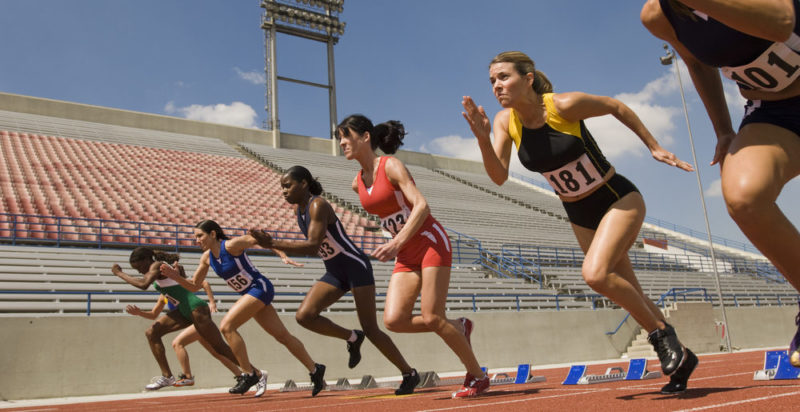
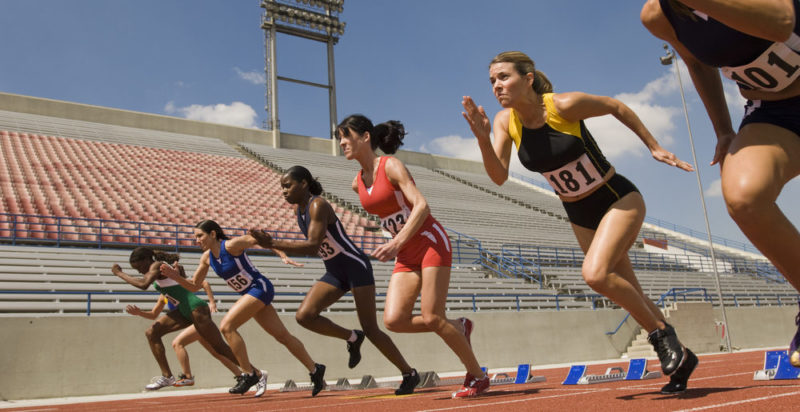
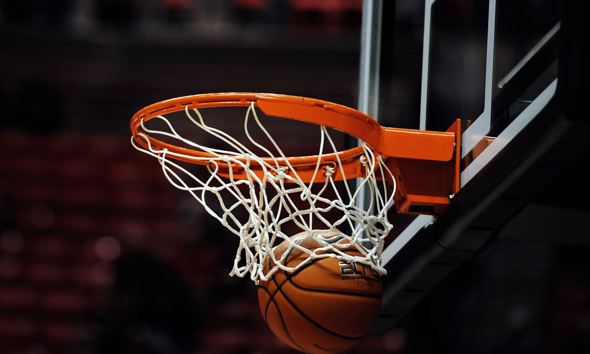

Atletismo
Es un deporte que contiene un conjunto de disciplinas agrupadas en carreras, saltos, lanzamientos, pruebas combinadas y marcha. Es el arte de superar el rendimiento de los adversarios en velocidad o en resistencia. 

El deporte es toda aquella actividad física que involucra una serie de reglas o normas a desempeñar dentro de un espacio o área determinada (campo de juego, cancha, pista, etc) a menudo asociada a la competitividad deportiva.
Es un deporte que contiene un conjunto de disciplinas agrupadas en carreras, saltos, lanzamientos, pruebas combinadas y marcha. Es el arte de superar el rendimiento de los adversarios en velocidad o en resistencia. 
El voleibol, balonvolea o simplemente voley, es un deporte donde dos equipos se enfrentan sobre un terreno de juego liso separados por una red central, tratando de pasar el balón por encima de la red hacia el suelo del campo contrario. 
A la hora de escoger la actividad física piensa en tu personalidad: si eres tranquilo, el pilates o el yoga serán perfectos; en caso de aburrirte rápido, escoge baile o aerobic; y si te consideras competitivo, busca una opción que requiera esfuerzo e intensidad
Enfocate en lo que eres mas habil, para elegir un deporte, aqui tienes algunos entre los que podrias elegir.
| Tipo | Deporte | Definicion |
|---|---|---|
| De manos | Voleiball | |
| Basketball | ||
| handball | ||
| De pies | Futbol | |
| Cuerpo Completo |